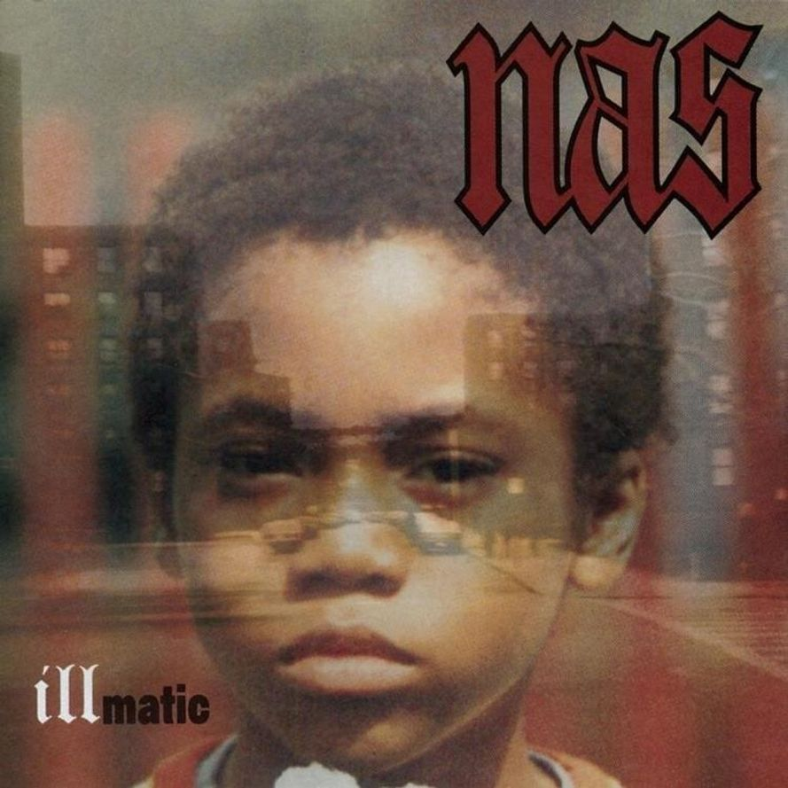

-

Faces is Mac Miller's mixtape that showcases his growth from his last album, with a blend of introspective tracks and playful wordplay. The mixtape delves into his struggles with drugs, showcasing a darker side of his life. Despite the heavy themes, there is a sense of music being his salvation throughout the project. Mac's journey from a young rap sensation to dealing with newfound fame and fortune is explored in the mixtape, providing a raw and unfiltered look into his life. Faces is Mac Miller's standout project, showcasing his impressive wordplay and ability to match his esteemed rap friends bar for bar. The mixtape features Miller's self-taught production skills, with beats that nod to jazzy boom bap while allowing his raps to shine. Despite its length and directionless feel, Faces displays Miller's growth as an artist, transforming adversity into honest and personal art. It may seem daunting at first, but with time and patience, it proves to be his most compelling work yet.
-
"Watching Movies With the Sound Off" marks a significant artistic progression for Mac Miller from his debut album, "Blue Slide Park." The album features production from top artists and showcases Miller's growth as a rapper and musician. Despite initial criticism, Miller's evolution is evident in his philosophical and introspective lyricism, distancing himself from his earlier, more superficial offerings. The album reflects Miller's personal struggles and musical influences, establishing him as a unique and talented artist. Mac Miller's album "Watching Movies With the Sound Off" showcases his growth as an artist, with diverse production and deeper storytelling. However, the album is slightly too long and some tracks blend together. Guest features highlight Miller's room for growth as a writer, leaving the question of his true identity as an artist unanswered.
-

Illmatic, a 1994 hip-hop classic landmark, is reissued in a box set including vinyl, gold CD, cherry wood case, and a book. Over 20 years later, it still exemplifies the greatness of rap music. The album is rooted in Nas's upbringing in Queensbridge Houses, the inspiration for his lyrics. The raw authenticity and storytelling on Illmatic make it a timeless masterpiece. Nas's debut album Illmatic was released at a time when hip-hop was evolving and facing an identity crisis. Despite initial struggles and low sales, Illmatic is now considered one of the greatest East Coast rap albums. Nas has since become a respected figure in the industry, with a Grammy nomination and widespread acclaim for his work.
-

The Grammy-winning producer-rapper, Kanye West, collaborates with Jon Brion on his sophomore album, Late Registration, transforming his grandiose, seemingly unrealistic ideas into an expansive masterpiece. West's self-importance, mixed with insecurity, makes him a compelling figure in hip-hop. With Brion's help, West's jumbled personae and vision for the grandiose are brought to life, solidifying his position as a fully formed artist in the genre. West's mic skills are showcased alongside top MCs like Common, Lupe Fiasco, and Cam'Ron. Houston's Paul Wall impresses with wordplay on "Drive Slow", while Jay and Nas loom over the album. Production overshadows West's voice, except on tracks like "Roses" and "Diamonds From Sierra Leone (Remix)". Criticisms include over-the-top orchestration on "Bring Me Down" and disposable tracks like "Celebration". Despite this, standout tracks like "Addiction" and "Gold Digger" highlight West's originality and humor.
-

Reissued classic holiday album features alternate takes and detailed liner notes. Nostalgia for Peanuts cartoon exposes the bittersweet reality of past memories. Vince Guaraldi's jazz score for Charlie Brown Christmas became iconic despite his premature death. The enduring popularity of the special reflects the lasting impact of Guaraldi's music on popular culture and the enduring appeal of childhood memories. The reissue of Guaraldi’s A Charlie Brown Christmas soundtrack offers more than just "Linus and Lucy." Melancholy covers of classic holiday songs and the Peanuts kids singing add a dysfunctional twist. Guaraldi's music captures the essence of the holiday season with hypnotic snow-mystic touches. The reissue includes alternate takes and great liner notes, making it a perfect stocking stuffer.